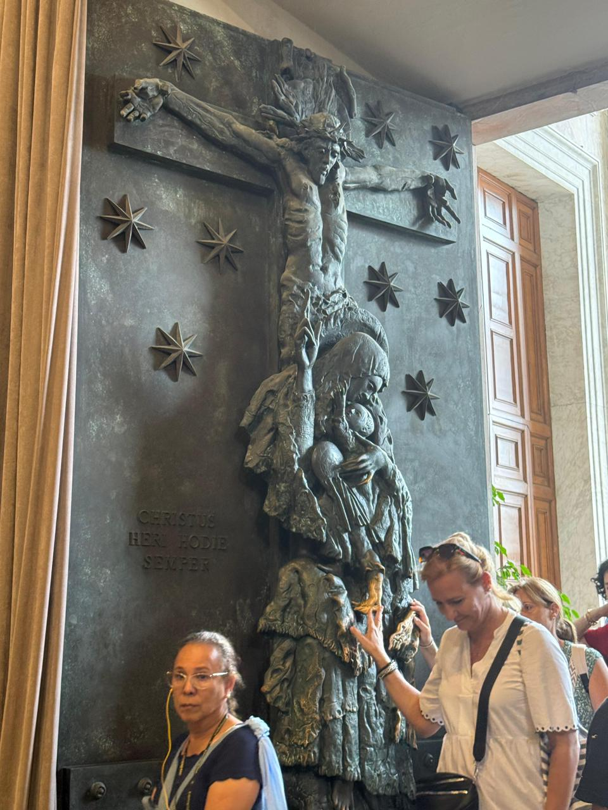

← Back to All Experiences
Pilgrimage to the Jubilee 2025 in Rome
From September 5–16, 2025, we embarked on a pilgrimage to Italy filled with grace and hope, traveling through some of the country's most significant Catholic sanctuaries. Throughout these 12 days, we experienced profound spiritual moments in Rome, San Giovanni Rotondo, Assisi, and Loreto, following in the footsteps of saints who shaped the history of faith.
Historic Moments
Our journey began in Rome, the heart of the Church, where we witnessed a historic moment: the canonization of Blessed Carlo Acutis and Pier Giorgio Frassati in St. Peter's Square. From there, we traveled to San Giovanni Rotondo to encounter the life and legacy of Padre Pio, visiting the places where he celebrated the Eucharist, heard confessions, and where his incorrupt remains rest, in an atmosphere of prayer, adoration, and contemplation.
Sacred Sanctuaries Visited
In Assisi, the birthplace of Saint Francis, Saint Clare, and Saint Carlo Acutis, we immersed ourselves in Franciscan spirituality, walking through its basilicas and participating in retreats that invite us to rediscover simplicity and surrender. We continued to Loreto, where the Holy House reminded us of Mary's living presence, accompanying us in moments of communal prayer and interior silence.
Jubilee Experience
Finally, we returned to Rome to pass through the Holy Doors of the Major Basilicas—St. Peter's, St. John Lateran, St. Mary Major, and St. Paul Outside the Walls—and participate in liturgical celebrations with the Holy Father during the Jubilee of Consolation. Each day was an opportunity for encounter with God, with ourselves, and with the community of pilgrims who share the same faith and hope.

Canonization of Carlo Acutis
Canonization of Carlo Acutis in St. Peter's Square at Vatican City, Rome - 2025 Pilgrimage

Canonization of Carlo Acutis
Pilgrims at the Canonization of Carlo Acutis in St. Peter's Square at Vatican City, Rome - 2025 Pilgrimage

Monte Sant'Angelo
Pilgrims at Monte Sant'Angelo in Italy - 2025 Pilgrimage
Sanctuary of Saint Michael
Sanctuary of Saint Michael the Archangel at Monte Gargano in Italy - 2025 Pilgrimage

St. Peter's Square
Pilgrims at the Canonization of Carlo Acutis in St. Peter's Square at Vatican City, Rome - 2025 Pilgrimage

San Angelo
Pilgrims walking through San Angelo in Italy - 2025 Pilgrimage

St Giovanni Rotondo
Birthday celebration at St Giovanni Rotondo in Italy - 2025 Pilgrimage

St Giovanni Rotondo
Pilgrims at the Sanctuary of Saint Pio of Pietrelcina in San Giovanni Rotondo in Italy - 2025 Pilgrimage

Assisi
Eucharistic celebration at Santa Maria Maggiore Parish in Assisi in Italy - 2025 Pilgrimage

Assisi
Pilgrims at the Porziuncola Church in Assisi in Italy - 2025 Pilgrimage

St. Peter's Square
Pilgrims at the Grace for the World Concert in St. Peter's Square at Vatican City, Rome - 2025 Pilgrimage
Jubilee of Consolation
Holy Father Leo XIV at the Jubilee of Consolation in St. Peter's Basilica at Vatican City, Rome - 2025 Pilgrimage

St. Peter's Square - Holy Door
St. Peter's Square on the way to the Holy Door at Vatican City, Rome - 2025 Pilgrimage

St. Peter's Square - Holy Door
Holy Door in front of St. Peter's Basilica at Vatican City, Rome - 2025 Pilgrimage

On the Way to St Giovanni Rotondo
Pilgrims traveling to St Giovanni Rotondo, Italy - 2025 Pilgrimage

St. Peter's Square
Pilgrims at the Jubilee of Consolation in St. Peter's Square at Vatican City, Rome - 2025 Pilgrimage

Holy Door St. John Lateran
Holy Door at St. John Lateran in Rome, Italy - 2025 Pilgrimage

Holy Door St. John Lateran
Holy Door at St. John Lateran in Rome, Italy - 2025 Pilgrimage

Holy Door St. Paul Outside the Walls
Holy Door at St. Paul Outside the Walls in Rome, Italy - 2025 Pilgrimage

Holy Door St. Paul Outside the Walls
From Peter to Francis, the 266 Popes of the Pontificate at Holy Door St. Paul Outside the Walls in Rome, Italy - 2025 Pilgrimage
Frequently Asked Questions
When did the Jubilee 2025 pilgrimage to Rome take place?
Our pilgrimage took place from September 5–16, 2025, during the Jubilee 2025 celebrations in Rome and Vatican City. This 12-day journey included the historic canonization of Carlo Acutis and Pier Giorgio Frassati.
Which sacred places did we visit during the Rome Jubilee 2025 pilgrimage?
We visited Rome, Vatican City (St. Peter's Square and Basilica), the four Major Basilicas with their Holy Doors (St. Peter's, St. John Lateran, St. Mary Major, St. Paul Outside the Walls), San Giovanni Rotondo (Sanctuary of Padre Pio), Monte Sant'Angelo (St. Michael the Archangel), Assisi (St. Francis, St. Clare, St. Carlo Acutis), and Loreto (Holy House).
Did we attend Carlo Acutis' canonization?
Yes, we attended the historic canonization of Carlo Acutis and Pier Giorgio Frassati in St. Peter's Square, Vatican City, in September 2025. This was one of the most significant moments of the Jubilee Year.
What is the significance of passing through the Holy Doors?
Passing through the Holy Doors during a Jubilee Year is a sacred Catholic tradition symbolizing spiritual renewal and the passage from sin to grace. We passed through the Holy Doors at all four Major Basilicas: St. Peter's, St. John Lateran, St. Mary Major, and St. Paul Outside the Walls.
What made this pilgrimage special during the Jubilee of Consolation?
Our pilgrimage coincided with the Jubilee of Consolation, allowing us to participate in special liturgical celebrations with the Holy Father. We also witnessed the canonization of two young saints, making this a truly historic spiritual journey.
How can I join future pilgrimages with Sky Travel?
Contact us directly via WhatsApp at +1 (786) 290-9114 or email info@skytraveljm.com for upcoming pilgrimage dates and destinations. We organize pilgrimages to Rome, the Holy Land, Medjugorje, and other sacred sites throughout the year.